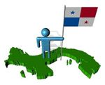

De: La Frikipedia, la enciclopedia extremadamente seria.
De: La Frikipedia, la enciclopedia extremadamente seria. De: La Frikipedia, la enciclopedia extremadamente seria.
| De la serie Países del planeta tierra: | |||||
| Panamalandia | |||||
|---|---|---|---|---|---|
| |||||
| Lema: "Somos Pro-mundi Beneficio, menos para el mismo país" | |||||
| Himno: "Alcanzamos a mi abuela en bicicleta en el campo aterriza el avión, con ardientes fulgores en la olla, se ilumina la nueva indigestión"
| |||||
| 
| |||||
| Capital | Panamá City (Boscolandia) | ||||
| Mayor ciudad | Panamá City (en decadencia) | ||||
| Lenguas oficiales | El Panameño, El Chiricano, Mandarín, Wari Wari (Inglés caribeño), Holandés,Italiano, Francés, Japonés | ||||
| Gobierno | Corrupción, anarquía | ||||
| Presidente | Juan carlos Viruela | ||||
| Área | {{{área}}} | ||||
| Población | 10 millones de africanos, 3 millones de chinos, 2 millones de italianos, 1.5 millones de colombianos, 1 millón de árabes, 1 millón de judíos, 1 millón de franceses. Se me olvidaba, 200 mil panameños, sin contar los gringos. | ||||
| Moneda | Balboa que nadie lo usa, todos prefieren el Dolar pendejo | ||||
| Zona horaria | Zona Canalera | ||||
| Dominio Internet | .pito | ||||
| Código telefónico | 507
| ||||
| Panamá está lleno de todas razas menos de Panameños | |||||
Pedazo de tierra súper pequeño, que no parece ni un país, es tan pequeño que ni se nota en un mapa. Lo único que tiene que puede llamar la atención es El Canal. Pertenece a la República Federal de Centroamérica, y posee el gobierno más corrupto que ha existido a través de la historia. Panamá se encuentra ubicada entre Costa Pija y Colombia. Panamá tiene los edificios mas Altos de toda latinoamerica esto te lo digo para que sientas harta envidia. Ademas puedes lavar tu ropa en el pacifico y irte a atlántico el mismo día a bañarte.
-Norte: Atlantis la Ciudad Perdida, Mar Caribe.
-Sur: Océano Pacífico (actualmente en guerra).
-Este: Costa Pija.
-Oeste: La querida Colombia y mucha droga .
El pedacito de tierra se divide en pedacitos más pequeños, llamados provincias y comarcas, igual que en el Señor de los Anillos y varios juegos de Zelda. A su vez estos pedacitos se dividen en pedacititos más pequeñitos llamados distritos, pero no es el tema. Estas provincias son:
Bocas del Toro: tierra de muy bonitas playas, donde los gringos, canadienses, europeos y la clase altísima (ladrones y corruptos) disfrutan sus vacaciones, está ubicada en el caribe y posee varias islas. La población autóctona habla en un 90% el inglés, dejando el español en un 5%, y el otro 5% es el idioma cholo, o sea Ngobe Bugle. Originalmente era de Costa Rica, pero éstos al no tener ejército no pudieron defenderse de las armas nucleares de Panamá y la perdieron.
Coclé: provincia que se dedica al turismo en masa, por sus playas del pacífico y un clima de montaña, aunque tales montañas no existen, solo es un simple cerro que tienen al norte. Abundan los cholos, los rakas y los lapecillos. Además los hobbits que viven dentro del volcán dormido del Valle.
rakas y los laopecillos. Según muchos historiadores, es el lugar donde se creo el reggue en español, o mejor conocido como el mierdaton (pero bueno los pueltorriqueños lo robaron).Su Población se basa de negros de las antillas u otros lugares que invadieron, formando pandillas que forman distintos tipos de tiroteos, o vulgares balaceras. Es muy famosa la ciudad de Colón por ser considerada la ciudad más tranquila y pacífica del hemisferio.
Chiriquí: tienen su propia bandera y escudo. Actualmente están formando un ejército para una separación del resto de la república, creando un país que será llamado Chiriquilandia. Es el país de los prittys, y sus frases comunes son "METO!!" (que algo es extraño, ejemplo: "Soy Chiricano, METO!!"), "oh, eso TA ARRECHO!!" (está duro, muy difícil, en la capital significa otra cosa: que el hombre lo tiene "excitado"...). Se caracteriza por tener mujeres que están bien buenonas, o mejor dicho: son "pays". En particular, la población de este semi-país es altamente creída (creen que son superiores intelectualmente) y obviamente no lo son y no son bien recibidos por las demás provincias por este motivo y por que no se bañan! Se rumora que este semi-país impondrá visa a residentes Panameños para entrar al país. Sinceramente esta es la provincia mas creída de toda la bolita del mundo.
Darién: provincia abandonada y desolada del Istmo de Panamá, es la que tranca la vía panamericana que se supone que debe unir a América, ya que posée una selva bastante espesa. Es el entradero de los colombianos al país y donde entra toda la droga a Centroamérica y América del Norte. Hay muchas comarcas de hobbits entre ellos las FARC, la Comunidad del Anillo e innumerables cholos de todas las clases, especies y colores.
Herrera: provincia ganadera, cuando vas allá, nada más ves vacas, vacas, vacas, vacas, vacas, vacas y más vacas. No hay población humana vista. Esta provincia ha sido conquistada por el maíz, que tiene por esclavas a la vacas. Herrera es la provincia donde se encuentran la gran mayoría de los ñorros del país, pero como son unos coñazos no hablaremos de ellos.
Los Santos: provincia con los mejores carnavales de Centroamérica y los mas gays del mundo. Abundan los blancos de una sola ceja que se caracterizan por tener una doble vida durante todo el año son hombres y durante los carnavales son cuecos desflorados y de ahí salieron distintas frases campecheras del país como por ejemplo "Soy gay". Algunos Son tan gays que donde ven un palo lo quieren tumbar de una vez.
Panamá: provincia que tiene la única ciudad grande, hogar de los yeyes, aunque también tiene sus partes donde abundan las rakas y los laopecillos. Es la provincia partida por la mitad ya que le pasa el canal por el centro. Piensen lo que quieran en eso de partida por la mitad.
Veraguas: provincia que limita con los dos océanos, de ahí se originó el nombre (Ver haguas) y tambien por que todas sus aguas son verdes la de los ríos, costas, alcantarillados y la potable, pero son verdes de suciedad ya que estos especimenes de habitantes todo lo ensucian.
Asi se habla en panameño lee y aprende:
El panameño no ignora: chifea
El panameño no tiene “mucha hambre”: tiene “buka hambre”
El panameño no se emborracha: queda hasta la verga
EL panameño no dice Hola, te dice: Qué xopa!
El panameño no tiene amigos: tiene pasieros
El panameño no se cae: se saca la mierda
El panameño no se ríe: se caga de risa
El panameño no roba: transa
El Panameño no juega: birrea
El panameño no convence: tira lírica
El panameño no molesta: jode
El panameño no se molesta: se cabrea
El panameño no se enfada: se emputa
El panameño no estudia: pila
El panameño no se golpea: se mete un vergazo
El Pamameño no te dice estúpido: Te dice awebao
El panameño no toma siestas: echa un cinco
El panameño no va rápido: va a balazo
El panameño no toma: chupa
El Panemeño no fuma: se vuela
El panameño no dice cerveza: dice pinta
El panameño no pide que lo lleven: pide un bote
El panameño no dice juego: dice birria
El panameño no dice “algo no esta bien”: dice “esta vaina vale verga”
El panameño no hace el amor: culea
El panameño no le hace el amor a su novia: se la echa
El panameño no dice lesbiana dice: dice tortillera
El panameño no dice licor dice: guaro
El panameño no tiene sexo: se echa’ un polvo
El panameño no dice que se formó una discusión: sino que se formó un verguero
El panameño no dice que se formó un disturbio: dice se formó la chucha madre
El panameño no dice homosexual, dice: cueco
El panameño no se masturba: se pajea
El panameño no tiene novia: tiene ley, candado, amarre, grúa, lo que sea que pueda impedir la libertad del mismo.
El panameño no dice locura: dice ponchera
El panameño no dice incoherencias: dice atorrancias
El panameño no dice que esta bien: dice que ta’ cool
Para el panameño algo no esta bueno: esta del carajo
Para el panameño no hay algo bonito: hay algo solido, duro, pritty.
El panameño no dice chofer: dice palanca
El panameño no es celador: es wachiman— WATCHING MAN????
El panameño no dice nalga: dice culo
El panameño no dice vagina: dice mil cosas que no están ni cerca a eso, dice tonton, chuch…., cuca, araña, micha.
El panameño no se excita: se arrecha
El panameño no eyacula: se viene
El panameño no penetra a la mujer: se lo entierra
El panameño no le hizo el amor a su mujer: le dio huevo
El panameño no tiene pene: tiene pinga o pipí
El panameño no le dice a la mujer que es bella: le dice que es un pay
El panameño no se olvida de alguien: lo escracha
El panameño no es adinerado: ta montao
El panameño no tiene carro: tiene nave
El panameño no romancea: arropa y se revuelca
El panameño no escucha reggae: escucha plena
Para el panameño algunas mujeres no son feas: son unos bagres
El panameño no anda en un carro descuidado: anda rodando en una roña
El panameño jamas ha tenido una casa: siempre ha tenido su chantin’
El panameño no ve pornografía: ve pelo pelo
El panameño no dice cigarrillos: dice blancos
El panameño no dice que no tiene dinero: dice que esta pelao’, anda piolim y/o anda en la cama de los perrros
EL panameño no dice dolares: dice palos
El panameño no saluda: shotea
El panameño no sale: se arranca
El panameño no pelea: o se enfrasca o se embolilla
Y lo mas importante: el panameño nunca pierde una discusión porque siempre termina “mandándote pa la verg…..”
El panameño no es cualquier cosa: es Panameño
El panameño ya no dice banda dice: massssaaaaaa
El panameño no tiene frenes tiene: piezasssssssssss
El panemeño no conoce el ghetto conoce:bagdadddd
Pedacitos de tierra donde viven los indígenas, estos tienen su propia lengua y su propia forma de vestir, los indígenas que predominan son: -Los Kunas: se ubican en el mar caribe. Son los indígenas más inteligentes ya que ellos si viven en casas, no en chozas.
-Los Ngöbe Bugle: aún viven en chozas y le quitaron una gran cantidad de tierra al semipaís de Chiriquí.
-Los Mandungandí: son pocos creativos ya que usan el mismo idioma de los kunas. Se Ubican cerca de la provincia de Darién y les encanta que los turistas vallan a verlos, pues al verlos comienzan a bailar, cantar y saltar, comportándose como salvajes, asi los turistas les dan bastante dinero.( Bueno son los mas inteligentes)
-Los Wargandi: no se ni donde se encuentran, la cosa es que me hablaron de ellos en la primaria.
-Los Embera Waunan: mejor conocidos como chocoes(sera que les gusta el chocolate), estos son los exhibicionistas, los hombres andan con tapa rabos y las mujeres sin camisa.
En estos pedacitos de tierra(me acorde que Panamá esta partido por la mitad xD) hay diferentes clases raciales, muy particulares y no las vas a encontrar en ninguna otra parte del planeta(execpto lo otros). Entre estos están las rakas y los laopecillos, los yeyes y ls yeyesitas, los cholos, los high class, los paupérrimos, entre otras muchas más(aquí estoy yo).
Rakas y laopecillos Persona que no la pudes mirar porque sino te mata(plo plo plo), su frase favorita es "que e lo q e". Las mujeres rakas (chacalitas) son peores que los hombres mayormente tienen nombres como: Yasuri Yamileth, Katiuska, Nairobis, etc.( que nombres mas raros ¿no?) Estas mujeres odian a las yeyesitas, siempre andan armadas con gilette(o yilet ¬¬)Frase de la mujeres raka: " te saco la yilet" o "eii te toco piso" Ellas aman el mierdaton(reggaeton), es más lloran cuando oyen una canción estúpida, como la locura automática
Los hombre conocidos como lapecillos son mas pasivos, pero OJO, si pasas por su barrio bien arreglado(entallado o chaneado) te roban y te dejan sin nada por ahi. Estos se dedican a jugar el futbol(furbor)
Los laopecillos andan por ahi todos fumados, no les importa nada,siempre andan encanutados. [[filename)">Image:http://anodis.com/cgi-bin/fotos/20072135717chacalitos.jpg%7Cthumb%7Cwidthpx%7C ]]
Yeyes y yeyesitas
Son los archienemigos de los rakas, son los que hablan con un acento muy extraño . Los yeyes se visten a la ultima moda, oyen la música de moda, viven para la moda( son unos fashionistas). Esta raza le gusta aparentar mucho mas de lo que son.
Los cholos Comunes
Son una de las cosas más extraña de este pedazo de tierra, no tienen personalidad definitiva.
El deporte favorito es chismear y el béisbol.
Se dividen en dos subrazas: los cholos cholos y los blancos
Cholos Cholos : son originarios del norte de las provincia de coclé(conste que yo no soy chola) y Veraguas, y del semi país de Chiriquí. Sus caracteristicas fisicas es que son bajitos( de 1.40 a 1.59) de cabello cholo(lasio), piel canela y a veces les gusta el futbol, aunque no lo saben jugar(como todos los panameños)pero son muy buenos en el beisbol(por ejemplo: Mariano Rivera, Carlos Lee, etc.). Son muy peliones y discuten por todo.
Blancos : originarios de Los Santos, Herrera y el sur de Veraguas. Poseen un acento similar al de los españoles, pero introducen palabras de los argentinos. Son bastante altos y de cabello castaño y en algunas ocaciones tienen los ojos verdes,azules o grises, tambien se caracterizan por tener una sola ceja ( S:) ). Son la raza que mas gays tiene en el país, y de donde provienen las pocas bandas de rock(si se les puede llamar rock)de Panamá.
Los Chiricanos : Se creen mejores que los panameños promedios ,porque alla se establecieron los gringos con los franceses,surgiendo la mayoría con ojos azules,verdes o grises,son los argentinos de panama. También se creen superiores por la "alta" cosecha de cafe y lechuga en sus tierras altas, lo cierto es que como allá están ubicados los indios Ngobe Bugle (mano de obra barata)por eso se da tanta explotación de cafe y legumbres que abastece al país
La High Class
Son unos 4 gatos que tienen el 97% de las riquezas del país. Tratan de robar todo lo que pueden y se reunen en clubes específicos.
Los Piedreros Son los que están regados por las calles
Otros En esta raza se encuentran los frikis(aparecemos cada día[si crecemos más y más]), los emo(cada día son más) (Luija dice: por favor, que desaparezca esta raza emo del país pero ya, y que no se extienda, conozco a uno, y es un puto idiota que la gente no puede escuchar reggeaton a un metro cerca de el, porque se pone hablar pajas de que es una mierda de música, blablabla..., siendo el reggaeton uno de los mejores géneros dentro de la música), metaleros(se están extinguiendo) (Luija dice: mejor, que se largen estos tipos de este bonito país) y los locos( se ven por las calles) (Luija dice: estos si son prittys xD).
Debido a que Panamá es uno de los países con mas extranjeros en el mundo,tiene muchas lenguas,cosa que hace difícil comunicarse en panama xd. son :
QUEBRANTO: Misteriosa elevación de la temperatura corporal no lo suficientemente alta como para ser considerada fiebre, pero sí lo bastante seria como para faltar al trabajo o al colegio.
PATATÚS: Ataque súbito de loquera de origen desconocido, el cual puede ser objeto de una hospitalización para su observación. Generalmente le da a personas de 50 años en adelante.
YEYO: Cualquier trastorno repentino que sea lo suficientemente grave como para ir al médico, tomar remedios y faltar al colegio, o trabajo. Puede utilizarse como sinónimo de patatús.
FARACHO: moridera que empieza con una calentura en el pecho que sube a la cabeza. Con o sin una sudadera por todo el cuerpo.
CHICHON: Protuberancia craneal usualmente causada por el güevazo sufrido durante el patatús...!
EMPACHO: Desorden digestivo ocasionado por una 'comida pesada' después de comer cositas ligeras como: pierna de cerdo, chicharrones y dos botellas de... La sociedad Gastronómica recomienda para estos casos ' gotas amargas' (el Alka Seltzer nunca es igual).
SERENO: Misteriosa sustancia que se riega particularmente en horas nocturnas y que afecta sobre todo a niños si no llevan la mollerita bien tapada. También afecta a personas mayores o a la personas con alto grado de embriaguez...!.
CUERPO PESADO: ¿Cómo explicarle a otro ser humano no nacido en el istmo qué es sentirse con el cuerpo pesado ?. Es una vaina así como que el tronco va para un lado, los brazos pesan más que el c_ _ _ y de paso las piernas no le dan... ¿quién entiende esto?.
SALPULLIDO: Erupción extraña compuesta por un poco de 'bolitas' que salen generalmente después de haber comido algo que no le cayó bien o es alérgico al cóctel de camarones el cual ha tragado más de la cuenta cuando fue por primera vez a la playa.
RONCHA: Las 'bolitas' anteriores pero apretujadas y que pican, que friegan con “j”, sobre todo si están localizadas en partes nobles. Y a propósito, ¿por qué le dirán nobles?
COGIÓ UN AIRE: Éste de verdad que tiene locos de remate a todos los científicos de Harvard, porque hasta el momento no se explican cómo es la fisiopatología de esta vaina: ¿Cómo uno se puede coger a un elemento gaseoso (aire)? Y el aire, ¿se deja coger así no más? Y si se deja coger, ¿por dónde?
LE DIO UNA VAINA: No tiene lugar del cuerpo específico, el hecho es que esa 'vaina se lo llevó.
LE DIO NERVIOS: Todo el mundo tiene nervios, pero en Panamá, los nervios 'dan'. Se refiere cuando una situación genera confusión, miedo, angustia. Es peligroso porque puede terminar en patatús!
UNA GÜEVADA RARA: Contrariamente a lo que parece etimológicamente, no tiene nada que ver con el órgano que están pensando. Puede dar en cualquier parte del cuerpo.
Güevazo : Caídas aparatosas, generalmente en sitios públicos, de las cuales quienes la sufren, a pesar de lo estrepitosos, se paran rapidito, como si nada hubiera pasado.
JODIDO: Estar mal, con algún dolor generalmente en alguna o todas las partes del cuerpo, pero también atribuible al dolor de estar sin trabajo o sin un peso. También alude a desarrollo mental.
ÑANPIAO:estar loco por cualquier lugar, es decir moribundo.
MONSTROSEARSE: enojarse de forma barbara.
RAYARSE: sinonimo de monstrosearse.
ESTAR EN BOSNIA: no tiene nada que ver en estar en ese país, sino que, es estar mal en el estado fisico, mantal.
VIENTO ENCAJAO: lesion muscular en la region dorsal, causada generalmente por bañarse con el cuerpo caliente.
DOLOR DE YEGUA: dolor subito en el cuadrante superior derecho del abdomen causado por tomar mucha agua durante una birria.
OJEAO: extraña maldicion de una persona a otra especialmente a niños, los sintomas son fiebre, malestar general y llanto incontrolable.
PAÑO BLANCO: lesion micotica y pruriginosa que se transmite especialmente si tienes contacto con el sudor del afectado.
LE SALIO UN NACIO: lesion dolorosa, en ocaciones pruriginosa en la piel, puede causar fiebre.
ENGOMAO: resaca causada por una noche de rumba( en la mayoria de los casos).
CULILLO: estado mental que causa desesperacion y desencadena una reaccion de miedo hacia una persona o cosa.
PASMAO: puber que disminuye su capacidad fisica e intelectual y que se relacioana con pasar mucho tiempo en el baño. "ESTE MUCHACHO ANDA BIEN PASMAO ULTIMAMENTE".
UÑA ENCARNA: crecimiento anormal del borde exterior de la uña y que se incrusta en la piel del dedo o pie afectado.
HECHO M_ _ _ _ _: Es un combo especial que incluye un síntoma de todas la enfermedades descritas anteriormente
El panameño sigue al pie las leyes, todo el mundo las rigen sin el menor esfuerzo:
Artículo N° Unico: Se vivo.
Artículo N°Unico: No hagas nada
Articulo Noriega 01 "Al amigo palo y al enemigo plomo" Articulo Noriega 02 "Ni un paso atrás"
Al panameño le gusta mucho las fiestas, entre las mejores fiestas estan:
La fiesta de la rumba: pura gente arrecha con ganas de hacerse la paja pero terminan con el oyo de atras roto.
En el pedacito de tierra, hay sindicatos, los cuales estean bajo el mando de idiotas que no saben que hacer con su vida. Estos sindicatos se distinguen por colores como el rojo y el amarillo... aunque el sindicato del rojo es el unico que llama la atención.
Sindicato Rojo(SUNTRACS): dirigido por unos estupidos que no tienen más nada que hacer que tirarse a la calle y cerrar la avenidas, interrumpiendo el trafico. Sinceramente no se cual es el estupido que dirige este sindicato(Genaro Lopez o Saul Mendez??), estos hombrecillos creen que van a poder dominar el mundo con su sindicato. En este sindicato son los unicos que tienen la capacidad de pensar(en realidad son unos tontos)si tu opinas eres del otro sindicato.

| |
|---|
| Bahamas | Barbados | Dominica | Granada | Guyana | Haití | San Cristóbal y ¿Nieves? | San Vicente y las Granadinas | Santa Lucía | Trinidad y Tobago | Uruguay | Venezuela |
Autor(es):
{kind=link}